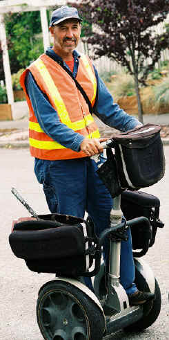

Viaggio Note
V041001
Let's Travel
Motorized Transporters
V041001b>
2022-05-06
-12:10 -0700
|
|
Viaggio Note
V041001 |
|
|
 |
2004 September
26. Sunday I'm walking back
from Blockbuster, retracing my route from home so that I can take more
pictures of sights I'd noticed when heading the other way. I hear
this whirring noise and this fellow whips into place behind a parked
car, steps off his Segway HT, and
begins checking the water meters along the parking strip.
I've never seen an HT before, and I watch the vehicle as the Public Utilities guy checks the meters. Riderless, the HT e-series model simply stands in place, gently tipping slightly forward, then slightly back, forward then back. Of course, I say to myself, balance is about perpetual falling around a balance point. It's marvelously simple looking. I ask the meter reader (or checker -- I didn't ask exactly what he was doing) to pose for his picture. It seems like a marvelous way to get around residential neighborhoods for his duties, and he says it works great. This looks like a sweet-spot application for this vehicle. I wonder if the police parking patrol will use them for tagging parked cars and checking parking meters. |
|
|
| You are navigating Orcmid's Lair |
created 2004-10-02-22:16 -0700 (pdt) by orcmid |